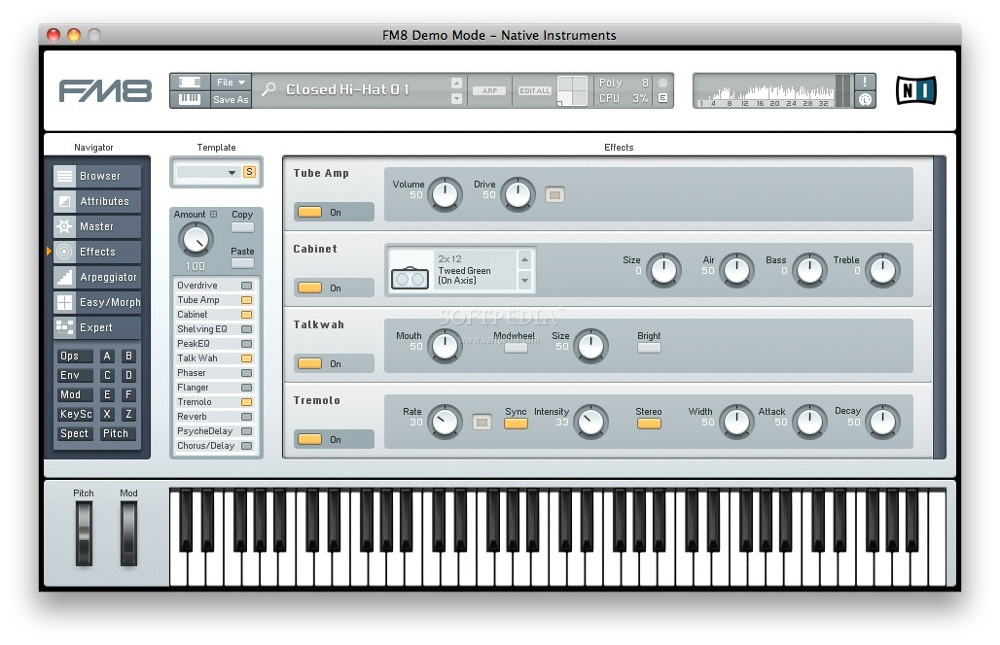
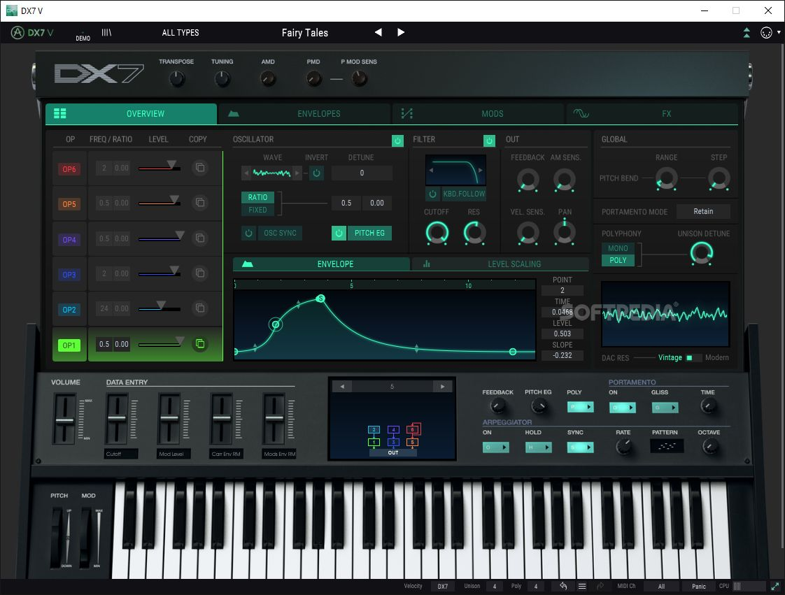
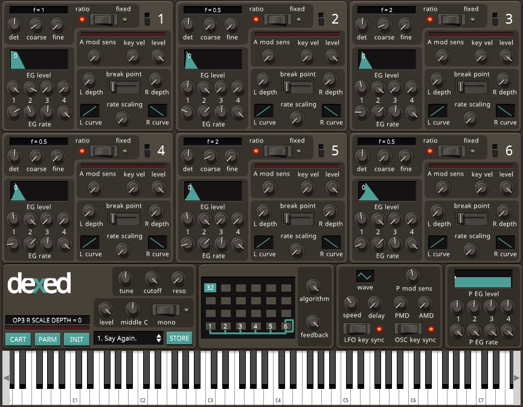

FM-синтез в современности


Технологию FM-синтеза Yamaha не оставила. Её доработанная версия используется во флагманской линейке синтезаторов Montage, а также в более бюджетной линейке Modx.
В 2015 году Yamaha представила линейку компактных бюджетных синтезаторов reface. Одним из продуктов стал синтезатор reface dx, который тоже использует технологию FM-синтеза (правда немного упрощённую).

Комьютерные эмуляции
Не только Yamaha выпускает инструменты на основе FM-синтеза. Существуют различные виртуальные синтезаторы, точно воссоздающие звук DX7. Самыми известными из них являются FM8 (Native Instruments), DX7 V (Arturia) и Dexed (Digital Suburban). Последний является бесплатным и имеет открытый исходный код.


